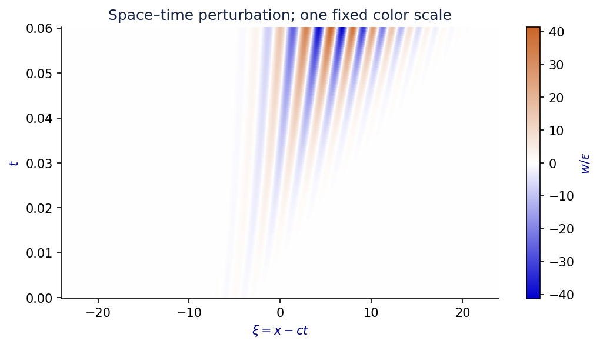
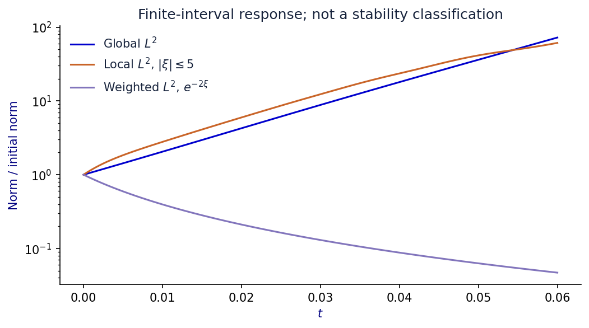

A reproducible laboratory for nonlinear traveling waves
An exact traveling wave and a persuasive animation are not enough to trust a PDE experiment. Sign errors, inadequate resolution, boundary reflections and ambiguous stability claims can all produce convincing but misleading results.
PhaseAtlas connects verified formulas to real browser-based computation. Researchers can evolve localized disturbances, compare moving and laboratory coordinates, inspect fixed-scale space-time maps, and distinguish global, local and weighted responses. A spectral atlas and numerical shooting tool generate explicit candidates for further analysis.
The browser uses a variable-coefficient implicit SBDF2 method. Thirteen mathematical and numerical tests pass; SymPy verifies all three exact profiles. Independent SciPy integration agrees with the default cubic experiment to approximately 0.0191% in the final perturbation relative L2 norm on the same spatial mesh. A joint refinement from 2,049 to 4,097 points changes the final perturbation by 1.13%; this is distinct from the same-mesh integrator comparison. Manufactured-solution, space, time and domain checks are provided.
For nonlinear-wave researchers, solver developers and instructors: audit a formula, design an experiment, inspect failure modes, and hand another researcher the complete configuration and time history. Exports include JSON, CSV, SVG, PNG, a report and WebM animation. An independent Python reference and editable figure generator accompany the source. No account, API key or external LLM is needed for local computation.
The new deliverable is the integrated software and evidence workflow, developed with AI assistance. The known exact fronts and the author's earlier MAE03 work are prior foundations. A future Nonlinearity paper must establish a new result, such as persistence and rigorous response estimates for a front family; the platform supports that work but does not claim to have completed it.


Finite-domain numerical observations. No nonlinear stability or experimental calibration claim.